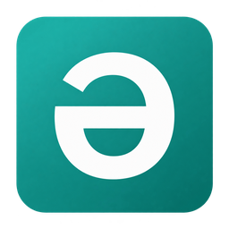

Type at your own pace
Regular letters appear immediately. Fast typing stays in order, without waiting for the hold timer.

Bashkort KeyboardTap for a Russian letter. Hold for a Bashkir letter. Keep your Russian layout and your usual typing speed.
Free · open source · no .NET installation needed
A familiar key. The letter you need.
Tap a button for a Russian letter or hold it for 450 ms for a Bashkir letter. On mobile, press and hold with your finger.
This demo works only with these buttons. Download the Windows app to type in other applications. Letters are never stored or sent.
Enable each mapping individually.
Shift and Caps Lock control letter case.
Regular letters appear immediately. Fast typing stays in order, without waiting for the hold timer.
Choose a hold delay from 250 to 800 ms, enable your preferred mappings and start with Windows. Settings stay on your computer.
The app has no analytics and never sends your text over the network. Diagnostic logs do not contain what you type.
The portable download includes .NET.
Keep all extracted files together.
Choose BashkortKeyboard…win-x64.zip from the latest release.
For example, use your applications folder. Do not run the app from inside the ZIP.
Switch to the Russian layout. Hold a mapped key to type a Bashkir letter.
Keyboard handling is global, but replacement depends on the text field being accessible through Windows UI Automation. If the caret position cannot be verified, regular typing is preserved. Support for every editor version is not guaranteed.
The app is not digitally signed yet, so Windows may warn about an unknown publisher. Open source lets you inspect and build the app yourself, but does not replace code signing.
The pending replacement is cancelled. Clicking, switching windows or changing the keyboard layout also cancels the hold, helping prevent another letter from being removed.
Replacements are disabled on the English layout. Switch to the standard Russian layout to type Bashkir letters.
To verify a replacement, the app briefly checks one character before the caret in an accessible field that is not a password field. That text is never stored or sent. See the privacy document for details.
Privacy details ↗